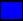
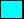
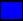
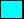
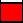

The goal of the puzzle is to construct a path  that will
take catcher  from its original cell to the cell where the target
 is located.
that will
take catcher  from its original cell to the cell where the target
 is located.
The tool-box consists of paths. There can be equivalent paths in the tool-box. Two paths are equivalent if one of them can be obtained from the other by a number of rotations.
The actions that can be applied to a path are
If no action is associated to a path, that path is used in construction of the solution path as it is seen in the tool-box.
If an action is specified to a path, that action applies to all equivalent paths in the tool-box.
It is possible to associate a number of actions to a unique path.
If ignore action is associated to a path, the selected path and all equivalent paths are excluded from the solution. This action must be applied only once and must be the only action applied to a path.
If rotate action is associated to a path, the selected path and all equivalent paths are rotated once. This action can be associated to the same path more than once.
If pick action is associated to a path, all the steps in the selected path and all equivalent paths obtain the pick behavior. Pick action must be applied only once.
If jump action is associated to a path, all the steps in the selected path and all equivalent paths obtain the jump behavior. This action must be applied only once.
The object that appears on the board are
Catcher is the board object that moves along the generated solution path.
Target is the object that specifies the location on the board that the catcher must reach following the solution path
Fruit  is a barrier for the movement of catcher on the board. If the part of the path which overlaps with the position of the fruit does not have pick behavior, the catcher cannot pass that square and cannot move anymore.
Stone is a barrier for the movement of catcher on the board. If the part of the path which overlaps with the position of the stone does not have jump behavior, the catcher cannot pass that square and cannot move anymore.
The solution is generated by applying the specified actions to each path and concatenating them in the order that they appear in the tool-box. The generated path cannot cross itself. If the selected actions and sequence cause the path to cross itself, this will cause a compilation error. The catcher then follows this path on the board. If the catcher reaches the target, a new puzzle with the same type and level is displayed. If the catcher cannot reach the target following the solution path, the same puzzle is initialized.